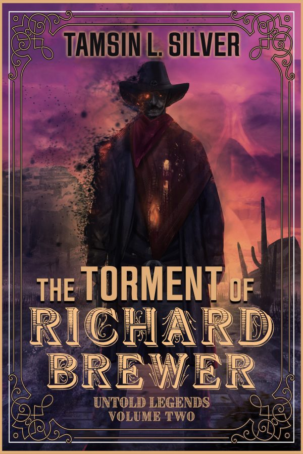
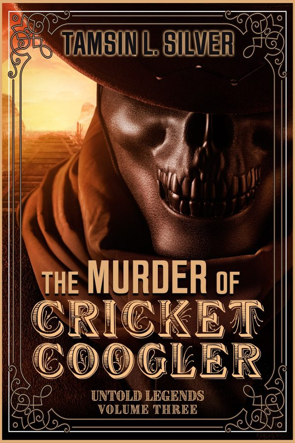
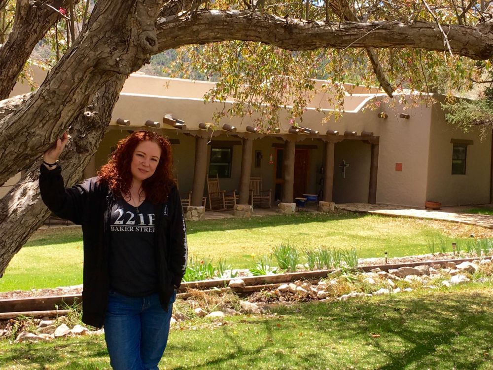

Lincoln County, twice
1878
John Tunstall is dead and the Lincoln County War has begun. Billy rides with the Regulators against the Santa Fe Ring, and a young man with a quick temper finds out that worse things than outlaws walk the Old West.
1949
Billy is William Kidwell, a federal agent. He's back in Lincoln County, New Mexico, to face the demons of his past and take his soul back from the immortal witch Scáthach.
“I'm a FANTASY AUTHOR. I have that in caps for the people in the back.”Tamsin, on her Untold Legends page
The Untold Legends
Volume one
The Curse of Billy the Kid
Lincoln County, 1878 and 1949. Where it all began.

Volume two
The Torment of Richard Brewer
Las Cruces, 1949. A missing agent, a dirty sheriff working with demons, and it's Lincoln all over again.

Volume three
The Murder of Cricket Coogler
Back to Las Cruces with the Regulators, to find out who killed Ovida “Cricket” Coogler and send Scáthach back to the Otherworld.
100copies, then no more
The Platinum Collectors Edition
All three Untold Legends in one black hardcover, print only. Every copy has a page inside with its number out of 100.
Order from Falstaff and it comes with a bookplate Tamsin signed. Buy one from Tamsin herself and she'll sign it then and there.
Land of Entrapment
It started in New York with a short story for a weird west anthology. Tamsin read up on Billy, clicked on John Tunstall's name, and kept going. She visited Lincoln, New Mexico, so many times that she moved to the state in 2017.
She has walked the town with a camera for anyone who can't get there. There's no phone signal in Lincoln, so the Tour Lincoln videos were filmed first and posted later.

Before Billy
- Windfire series
YA urban fantasy. At thirteen, Atlanta Hart starts having powers she can't explain.
- Skye of the Damned
The novel of the Skye of the Damned web series, with the Season One ending they never had the money to film.
- Moon Over Manhattan
Denika Petrovskii, the first female Alpha of Manhattan's West Side pack.
- Short stories and anthologies
Including “The Curse of Scáthach”, the story Billy's books grew out of.
Tamsin
Tamsin grew up in Michigan, lived in both Carolinas and New York City, and now lives in Albuquerque. She has a BA in Theatre and Secondary Education from Winthrop University and has taught middle and high school drama.
She writes around a day job in healthcare, shifts at Barnes & Noble, a demanding Australian Shepherd and a lazy black cat.
Ride along
Tamsin sits on panels at Dragon Con and other cons, and some of them are filmed. Day to day she's on Instagram at @tamsin.silver.